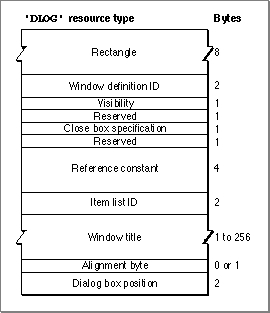

Legacy Document
Important: The information in this document is obsolete and should not be used for new development.
Important: The information in this document is obsolete and should not be used for new development.


The Dialog Resource
You can use a dialog resource to define a dialog box. A dialog resource is a resource of type'DLOG'. All dialog resources must be marked purgeable, and they must have resource ID numbers greater than 128.To specify the items in a dialog box, you must also provide an item list resource, described beginning on page 6-144. Use the
GetNewDialog function (described on page 6-106) to create the dialog box defined in the dialog resource.The format of a Rez input file for a dialog resource differs from its compiled output format. This section describes the structure of a Rez-compiled dialog resource. If you
are concerned only with creating a dialog resource, see "Creating Dialog Boxes" beginning on page 6-23.Figure 6-42 shows the format of a compiled dialog resource.
Figure 6-42 Structure of a compiled dialog (
'DLOG') resource
The compiled version of a dialog resource contains the following elements:
- Rectangle. This determines the dialog box's dimensions and, possibly, its position. (The last element in the dialog resource usually specifies a position for the dialog box.)
- Window definition ID.
- If the integer 0 appears here (as specified in the Rez input file by the
dBoxProc window definition ID), the Dialog Manager displays a modal dialog box.- If the integer 4 appears here (as specified in the Rez input file by the
noGrowDocProc window definition ID), the Dialog Manager displays a
modeless dialog box.- If the integer 5 appears here (as specified in the Rez input file by the
movableDBoxProc window definition ID), the Dialog Manager displays
a movable modal dialog box.These types of dialog boxes are illustrated in Figure 6-6 on page 6-10, Figure 6-8 on page 6-12, and Figure 6-7 on page 6-11, respectively.
- Visibility. If this is set to a value of 1 (as specified by the
visible constant in the Rez input file), the Dialog Manager displays this dialog box as soon as you call theGetNewDialog function. If this is set toa value of 0 (as specified by theinvisible constant in the Rez input file), the Dialog Manager does not display this dialog box until you call the Window Manager procedureShowWindow.- Close box specification. This specifies whether to draw a close box. Normally, this is set to a value of 1 (as specified by the
goAway constant in the Rez input file)only for a modeless dialog box to specify a close box in its title bar. Otherwise, this is set to a value of 0 (as specified by thenoGoAway constant in the Rez input file).- Reference constant. This contains any value that an application stores here. For example, an application can store a number that represents a dialog box type, or
it can store a handle to a record that maintains state information about the dialog
box or other window types. An application can use the Window Manager procedureSetWRefConat any time to change this value in the dialog record for a dialog box, and you can use theGetWRefConfunction to determine its current value.- Item list resource ID. The ID of the item list resource that specifies the items--such as buttons and static text--to display in the dialog box.
- Window title. This is a Pascal string displayed in the dialog box's title bar only when the dialog box is modeless.
- Alignment byte. This is an extra byte added if necessary to make the previous Pascal string end on a word boundary.
- Dialog box position. This specifies the position of the dialog box on the screen. (If your application positions dialog boxes on its own, don't use these constants, because your code may conflict with the Dialog Manager.)
- If 0x0000 appears here (as specified by the
noAutoCenter constant in the Rez input file), the Dialog Manager positions this dialog box according to the global coordinates specified in the rectangle element of this resource.- If 0xB00A appears here (as specified by the
alertPositionParentWindowconstant in the Rez input file), the Dialog Manager positions the dialog box over the frontmost window so that the window's title bar appears. This is illustrated in Figure 6-33 on page 6-63.- If 0x300A appears here (as specified by the
alertPositionMainScreenconstant in the Rez input file), the Dialog Manager centers the dialog box near the top of the main screen. This is illustrated in Figure 6-34 on page 6-63.- If 0x700A appears here (as specified in the Rez input file by the
alertPositionParentWindowScreenconstant), the Dialog Manager
positions the dialog box on the screen where the user is currently working.
This is illustrated in Figure 6-35 on page 6-64.